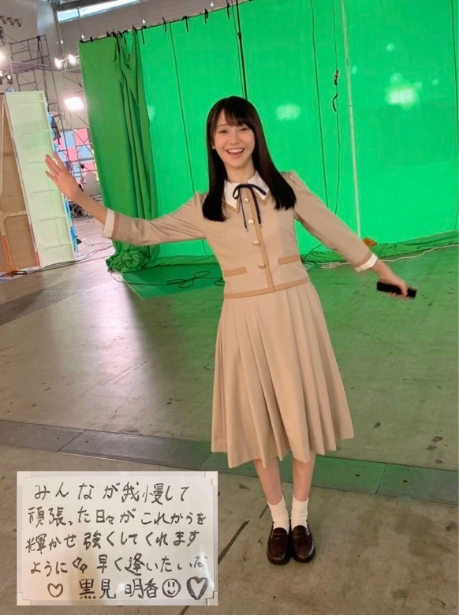
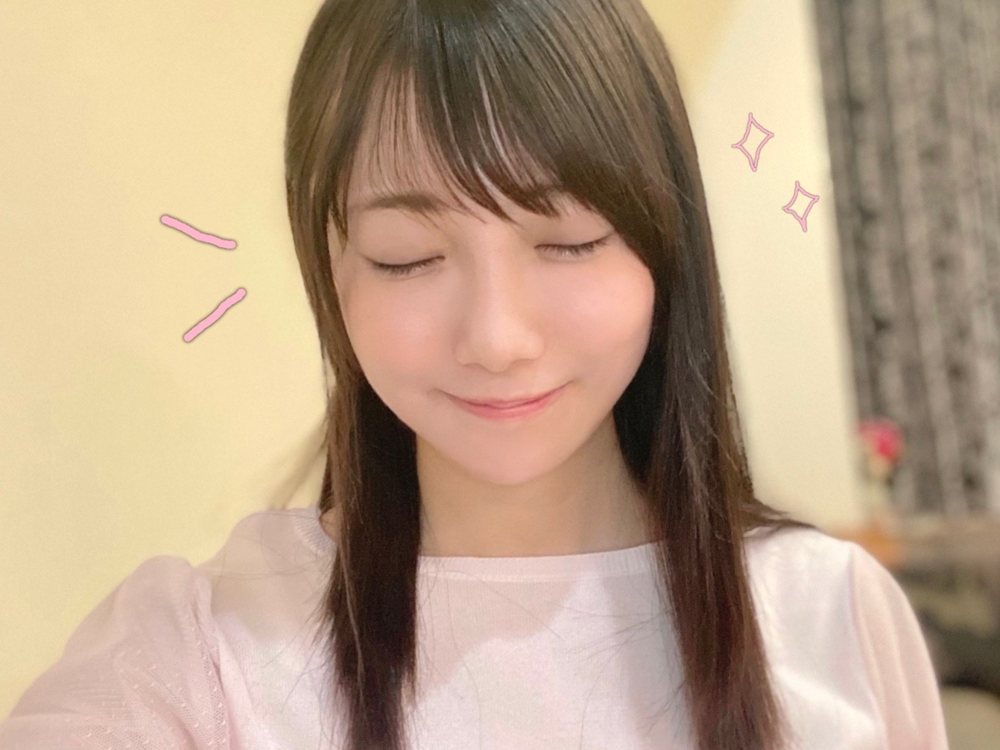
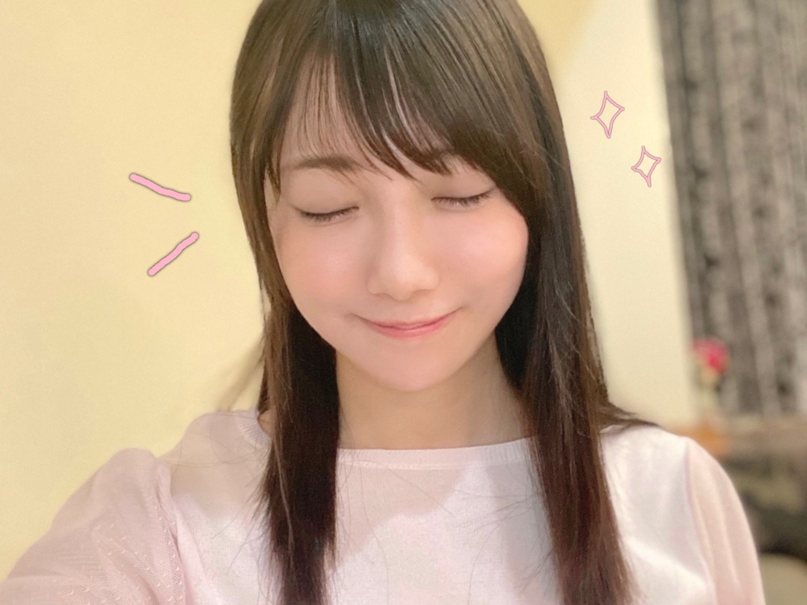
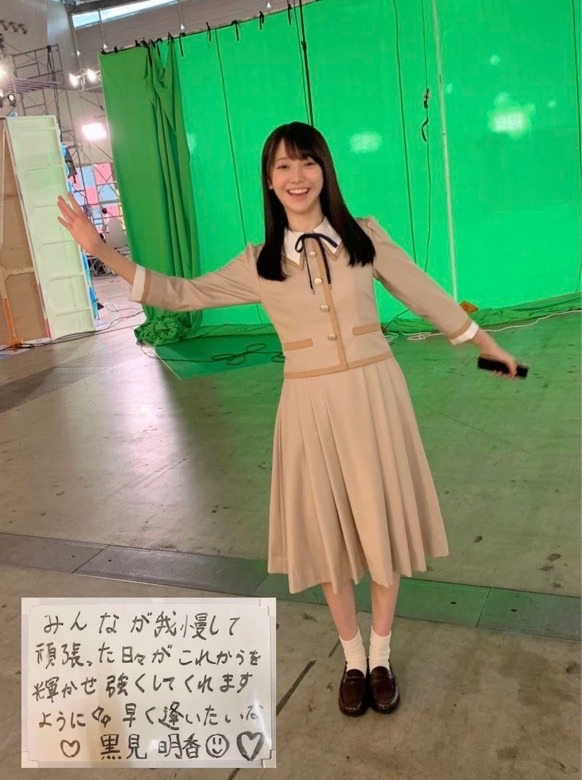

| 2020/06 26 Fri | "あなたのハートに全力ズッキュン♡" 黒見明香 |
暑いなか、今週も本当にお疲れ様でした☺︎
ココを見つけてくださり ありがとうございます♪
乃木坂46 新４期生の黒見明香です。
すこーしだけ自己紹介させてくださいませ☺︎
♪:*:･･:*:･･:*:･･:*:･･:*:･･:*:･♪:*:･･:*:･･:*:･･:*:･･:*:･･:*:･♪
黒見 明香（くろみ はるか）
2004年1月19日生まれ 16才
香港生まれ・東京都出身です
あだ名： くろみん・黒見ちゃん
3の倍数9・6・3(くろみ)
と覚えてもらえたら嬉しいです♪
★コメントより
Q. 46時間TVのお菓子の家はどの部分を作っていましたか？
A. "お菓子作り担当"だったので....
せっせと『クッキー』をいっぱい作っていました✩︎⡱
16人がチョコペンで手描きした ハート型♡のクッキーや
屋根の上にひらひらと乗っている、ピンクの桜の花びらも
生地をめん棒で2mmに伸ばして、可愛く型抜きして、
オーブンで焼いて、いっぱい作りましたー‼︎
＊
他担当だった矢久保美緒ちゃん♡も
練習して、できるようになったら・・・
またリベンジさせてくださいね！
松村さん、鈴木さんに圧倒されました！！
カッコ良く、そして最高に面白かったです✨
わたしも皆さんに楽しんでいただけるよう、
恥ずかしがらずにお家でコッソリ
♬ *。♩*。♬
松村さんは、司会でとってもお忙しいにも関わらず、
念願の ＃マツミンクロミン トークにも付き合って下さり、
本当に嬉しかったです((〃ω〃))
「黒かなぁ〜？」「でも黒いないんだよねー笑」と
わたしのマヌケな話にもノッテ下さり、
さりげない優しさが眩しすぎる✨憧れの先輩です。
＊
鈴木さんには「デビュー直後にこのような期間を迎えて、
いろいろと制限されちゃったり、
悩んだ事も多かったかもしれないけれど。。。
これが新４期のみんなの"良い糧" になるかもしれないね✨」
とお話しして下さり、アドバイス下さり、
これからも、いろいろなファンの方の
お気持ちが聞けるように、少しでもお話できるように...
コツコツ勉強を続けて行きたいなぁと思いました☺︎
♬ *。♩*。♬
非常感谢大家收看直播并支持我们！
这是我第一次参加这样的直播活动，感到十分紧张，还有一些小失误。但能够与大家互动感到非常有趣和高兴。 谢谢大家的评论和支持。
我会继续努力的！请大家今后也要多多支持乃木坂46！
生放送をご覧いただき、ありがとうございます。
こんな生放送イベントに参加するのは初めてで、とても緊張し、失敗しちゃったところもありました。 でも、皆さんとこウヤって交流することが出来て面白く、とても楽しかったです♪コメントと応援も本当にありがとうございました。
これからも頑張ります。乃木坂46の応援どうぞよろしくお願いします✩︎⡱
♪:*:･･:*:･･:*:･･:*:･･:*:･･:*:･♪:*:･･:*:･･:*:･･:*:･･:*:･･:*:･♪

-:-:୨୧:-:-マネージャーさんが撮って下さったオフショット♪
【 B.L.T.8月号「乃木坂ツーリスト」特別編 】
恒例のサイコロを使ったスゴロク企画では、
ガチの！！ゲーム体験をし、
（大好きすぎるからか？憧れの秋元真夏さん♡の
＊
皆さまにプレゼントさせて頂くチェキ♡には、
前の晩に何度も練習して臨んだのですが、
書くペン先が震えて、字がぷるぷるしてしまい・・・
そんな初めて記念のチェキになりました(*´-`)
３種類の衣装×２枚づつ載っているので、
よかったらぜひGETしてくださいね☺︎✨
＊
わたしの知らない自分・・・
『少し背伸びした16才』 を
撮影してくださいました✩︎⡱
是非お手にとってみて貰えたら嬉しいな☺︎♪
♪:*:･･:*:･･:*:･･:*:･･:*:･･:*:･♪:*:･･:*:･･:*:･･:*:･･:*:･･:*:･♪

ーフィナーレの「世界中の隣人よ」で映して頂いたメッセージボードです(*´-`)
【 乃木坂46時間TV 舞台裏のおはなし✨ 】
後輩メンバーに未央奈さんセレクトの
みんなで感激していました✩︎⡱
１つ目は研修生メンバーから頂いた誕生日プレゼント
２つ目はB.L.T.様の「乃木坂ツーリスト」すごろくで当たったもの
② 大人のアロマな香り
③ 心華やぐエレガントな香り
がして、幸せになります((〃ω〃))✨（963調べ）
こんな一日だったよといつも報告して下さる方も、
大切な時間を使ってお話しして下さり
本当にありがとうございます✨
大事に、一つずつ全部読ませて頂いています((〃ω〃))
皆さんのことを知ることが出来る、
私の１日の中で１番幸せな時間です♩
直接お話しできる時が、 待ち遠しいです✩︎⡱
と願っています(*´-`)
初めて会える日を、楽しみに待っています♪
＊
明日は、さっそくB.L.T.を読んで感想を送ってくれた
優しすぎる大好きな璃果ちゃんですよー！
読んでくださり、本当にありがとうございます☺︎
次回も、会えたら嬉しいなぁ✨
またねヾ(･ω･*)
くろみはるか☺︎
☆ 本日のあなたのラッキーナンバー：２ と ８
♪:*:･･:*:･･:*:･･:*:･･:*:･･:*:･♪:*:･･:*:･･:*:･･:*:･･:*:･･:*:･♪
ココを見つけてくださり ありがとうございます♪
乃木坂46 新４期生の黒見明香です。
すこーしだけ自己紹介させてくださいませ☺︎
♪:*:･･:*:･･:*:･･:*:･･:*:･･:*:･♪:*:･･:*:･･:*:･･:*:･･:*:･･:*:･♪
黒見 明香（くろみ はるか）
2004年1月19日生まれ 16才
香港生まれ・東京都出身です
あだ名： くろみん・黒見ちゃん
3の倍数9・6・3(くろみ)
と覚えてもらえたら嬉しいです♪
★コメントより
Q. 46時間TVのお菓子の家はどの部分を作っていましたか？
A. "お菓子作り担当"だったので....
せっせと『クッキー』をいっぱい作っていました✩︎⡱
16人がチョコペンで手描きした ハート型♡のクッキーや
屋根の上にひらひらと乗っている、ピンクの桜の花びらも
生地をめん棒で2mmに伸ばして、可愛く型抜きして、
オーブンで焼いて、いっぱい作りましたー‼︎
＊
他担当だった矢久保美緒ちゃん♡も
優しく、遅れてるわたしを手伝ってくれました♪
すごーーく良い香りがして・・・
つまみ食いを我慢するのが大変でした笑
♪:*:･･:*:･･:*:･･:*:･･:*:･･:*:･♪:*:･･:*:･･:*:･･:*:･･:*:･･:*:･♪

-:-:୨୧:-:- たくさんリクエスト下さった「ウインク♡」に挑戦！・・・あれれ？
⚫︎ウインクできますか？できるならぜひ自撮りのせてください！
『全力ウインク』の練習をしてみました・・・汗
運動神経悪いからでしょうか・・・ウインクのつもりが、
ほぼ目をつむっている模様です...Σ（ﾟдﾟll）
＊
すごーーく良い香りがして・・・
つまみ食いを我慢するのが大変でした笑
♪:*:･･:*:･･:*:･･:*:･･:*:･･:*:･♪:*:･･:*:･･:*:･･:*:･･:*:･･:*:･♪

-:-:୨୧:-:- たくさんリクエスト下さった「ウインク♡」に挑戦！・・・あれれ？
⚫︎ウインクできますか？できるならぜひ自撮りのせてください！
『全力ウインク』の練習をしてみました・・・汗
運動神経悪いからでしょうか・・・ウインクのつもりが、
ほぼ目をつむっている模様です...Σ（ﾟдﾟll）
＊
練習して、できるようになったら・・・
またリベンジさせてくださいね！
せっかくリクエストして下さったのに、下手でごめんなさい\(//∇//)\
♪:*:･･:*:･･:*:･･:*:･･:*:･･:*:･♪:*:･･:*:･･:*:･･:*:･･:*:･･:*:･♪

松村沙友理さん♡が考案してくださった、端午節「たまごのポーズ」です♪
憧れのステキなお二人とご一緒させて頂き、幸せすぎる時間でした✩︎⡱
【 乃木坂46オフィシャルWeibo300万人直前特別生配信✨ 】
昨晩、見てくださった方もいらっしゃるかなー？
松村沙友理さん♡鈴木絢音さん♡と共に、
ありがたくも生配信に参加させて頂きました♪
＊
初めてのことで前の晩からずっとドキドキしていて、
不安も大きく、とても緊張していたのですが、
松村さんが 可愛く楽しく リードして下さり、
優しい鈴木絢音さんが 進行を支えフォローして下さり、
大好きなお二人がそばに居て下さったことで、
初めてながら とても安心して
楽しく番組に参加させて頂くことが出来て
心から感謝しています(*´-`)✨
＊
46時間TVでも、憧れて見ていた
「テンション0・100対決！」や「ベストアクト」
松村沙友理さん♡が考案してくださった、端午節「たまごのポーズ」です♪
憧れのステキなお二人とご一緒させて頂き、幸せすぎる時間でした✩︎⡱
【 乃木坂46オフィシャルWeibo300万人直前特別生配信✨ 】
昨晩、見てくださった方もいらっしゃるかなー？
松村沙友理さん♡鈴木絢音さん♡と共に、
ありがたくも生配信に参加させて頂きました♪
＊
初めてのことで前の晩からずっとドキドキしていて、
不安も大きく、とても緊張していたのですが、
松村さんが 可愛く楽しく リードして下さり、
優しい鈴木絢音さんが 進行を支えフォローして下さり、
大好きなお二人がそばに居て下さったことで、
初めてながら とても安心して
楽しく番組に参加させて頂くことが出来て
心から感謝しています(*´-`)✨
＊
46時間TVでも、憧れて見ていた
「テンション0・100対決！」や「ベストアクト」
ゲームにチャレンジしました♪
松村さん、鈴木さんに圧倒されました！！
カッコ良く、そして最高に面白かったです✨
わたしも皆さんに楽しんでいただけるよう、
恥ずかしがらずにお家でコッソリ
自主練習しよう...！と思ったのでした・・・☺︎
（皆さんもよかったらコッソリ....
テンション0・100やってみてくださいねヾ(･ω･*)笑）
（皆さんもよかったらコッソリ....
テンション0・100やってみてくださいねヾ(･ω･*)笑）
♬ *。♩*。♬
松村さんは、司会でとってもお忙しいにも関わらず、
念願の ＃マツミンクロミン トークにも付き合って下さり、
本当に嬉しかったです((〃ω〃))
「黒かなぁ〜？」「でも黒いないんだよねー笑」と
わたしのマヌケな話にもノッテ下さり、
さりげない優しさが眩しすぎる✨憧れの先輩です。
＊
鈴木さんには「デビュー直後にこのような期間を迎えて、
いろいろと制限されちゃったり、
悩んだ事も多かったかもしれないけれど。。。
これが新４期のみんなの"良い糧" になるかもしれないね✨」
とお話しして下さり、アドバイス下さり、
あとで、新４期の５人皆で 優しさに感動してしまいました。
＊
＊
いろいろと不勉強なことが多く、
緊張して言葉が飛んでしまったりと,,,
生配信では個人的に反省も多かったですが。。。
緊張して言葉が飛んでしまったりと,,,
生配信では個人的に反省も多かったですが。。。
これからも、いろいろなファンの方の
お気持ちが聞けるように、少しでもお話できるように...
コツコツ勉強を続けて行きたいなぁと思いました☺︎
♬ *。♩*。♬
非常感谢大家收看直播并支持我们！
这是我第一次参加这样的直播活动，感到十分紧张，还有一些小失误。但能够与大家互动感到非常有趣和高兴。 谢谢大家的评论和支持。
我会继续努力的！请大家今后也要多多支持乃木坂46！
生放送をご覧いただき、ありがとうございます。
こんな生放送イベントに参加するのは初めてで、とても緊張し、失敗しちゃったところもありました。 でも、皆さんとこウヤって交流することが出来て面白く、とても楽しかったです♪コメントと応援も本当にありがとうございました。
これからも頑張ります。乃木坂46の応援どうぞよろしくお願いします✩︎⡱
♪:*:･･:*:･･:*:･･:*:･･:*:･･:*:･♪:*:･･:*:･･:*:･･:*:･･:*:･･:*:･♪
-:-:୨୧:-:-マネージャーさんが撮って下さったオフショット♪
【 B.L.T.8月号「乃木坂ツーリスト」特別編 】
美しい賀喜遥香ちゃん♡が初表紙をつとめている✨
一昨日6月24日に発売された『B.L.T. 8月号』様
３期生の先輩方から始まって、
４期生のみんなが引き継いできたステキな企画、
「乃木坂ツーリスト」
ありがたくも掲載して頂きましたー！
＊
一人で取材や撮影して頂くのは 初めてのことで
「・・・わたしで大丈夫かなぁ。。。>_<」と
ドキドキしていましたが,,,
３期生の先輩方から始まって、
４期生のみんなが引き継いできたステキな企画、
「乃木坂ツーリスト」
ありがたくも掲載して頂きましたー！
＊
一人で取材や撮影して頂くのは 初めてのことで
「・・・わたしで大丈夫かなぁ。。。>_<」と
ドキドキしていましたが,,,
恒例のサイコロを使ったスゴロク企画では、
ガチの！！ゲーム体験をし、
（大好きすぎるからか？憧れの秋元真夏さん♡の
"全力で「ズッキュン！」をする" というマスに
３回も当たってしまいました笑）
B.L.T.の頼もしい皆さまが盛り上げて下さり、
心から楽しい、笑顔の撮影となりました(๑˃̵ᴗ˂̵)✨
心から楽しい、笑顔の撮影となりました(๑˃̵ᴗ˂̵)✨
＊
皆さまにプレゼントさせて頂くチェキ♡には、
『初めてのサイン』を書かせて頂きました。
前の晩に何度も練習して臨んだのですが、
書くペン先が震えて、字がぷるぷるしてしまい・・・
そんな初めて記念のチェキになりました(*´-`)
３種類の衣装×２枚づつ載っているので、
よかったらぜひGETしてくださいね☺︎✨
＊
わたしの知らない自分・・・
『少し背伸びした16才』 を
撮影してくださいました✩︎⡱
是非お手にとってみて貰えたら嬉しいな☺︎♪
♪:*:･･:*:･･:*:･･:*:･･:*:･･:*:･♪:*:･･:*:･･:*:･･:*:･･:*:･･:*:･♪

ーフィナーレの「世界中の隣人よ」で映して頂いたメッセージボードです(*´-`)
【 乃木坂46時間TV 舞台裏のおはなし✨ 】
写真は「朗らか」という一言と共に送られてきました☺︎
"ハッピーなハニワ(埴輪)"みたいと笑われていしまいました(*´-`)笑
（46時間TVの舞台裏で、璃果ちゃんが遠くから撮ってくれました。）
"ハッピーなハニワ(埴輪)"みたいと笑われていしまいました(*´-`)笑
（46時間TVの舞台裏で、璃果ちゃんが遠くから撮ってくれました。）
♬ *。♩*。♬
ありがたくも堀未央奈♡さんがブログに書いて下さり、
瑠奈ちゃんも喜びを綴っていたように、
瑠奈ちゃんも喜びを綴っていたように、
休憩時間に「いつかの待ち合わせ場所」と
大好きなくすみブルーのドレスのクリアファイルに
大好きなくすみブルーのドレスのクリアファイルに
未央奈さんがサインをして下さり、
安全距離を守って お話して下さいました✨
＊
後輩メンバーに未央奈さんセレクトの
オシャレすぎる私物をプレゼントして下さり、
みんなで感激していました✩︎⡱
＊
ちなみに・・・
今ハンドクリーム『３つ』になったのです(*´-`)
嬉しくて鏡の前に並べています♪
１つ目は研修生メンバーから頂いた誕生日プレゼント
２つ目はB.L.T.様の「乃木坂ツーリスト」すごろくで当たったもの
（ガチなのです笑 嬉しかったですー✨）
３つ目は46時間TVの時に堀未央奈さん♡から頂いたステキな私物です。
３つ目は46時間TVの時に堀未央奈さん♡から頂いたステキな私物です。
それぞれ・・・
① 爽やかな石鹸の香り
② 大人のアロマな香り
③ 心華やぐエレガントな香り
がして、幸せになります((〃ω〃))✨（963調べ）
握手会で大事に使わせて頂きたいなぁ。。。と
夢見ています♬
よかったらどの香りか当ててくださいね(*´-`)笑
（＊書いて頂いたサイン&メッセージは
（＊書いて頂いたサイン&メッセージは
大切に心にしまわせてくださいな♡フッフッフ）
♪:*:･･:*:･･:*:･･:*:･･:*:･･:*:･♪:*:･･:*:･･:*:･･:*:･･:*:･･:*:･♪
前回の"46時間TV終了直後"のブログのコメントに
本当にたくさんの感想やアドバイス
ありがとうございます♡
＊
乃木坂を支えてくださる皆さまの
"乃木坂大好きだよー！"
"辛いこともあるだろうけど、一緒に頑張ろうー！"
という想いが真っ直ぐに心にささってきて
どうやってお返したら良いのだろう・・・と
考えていました。
『はなれてたって、ぼくらはいっしょ！』
というメッセージや、勇気を
皆さまから沢山伝えて頂いたように感じています。
＊
本当にありがとうございます。
じっくり考えて、また大切に、
ゆっくり、皆さんにお返しさせて下さいね♡
＊
初めてコメント書いてみたよという方、
こんな一日だったよといつも報告して下さる方も、
大切な時間を使ってお話しして下さり
本当にありがとうございます✨
大事に、一つずつ全部読ませて頂いています((〃ω〃))
皆さんのことを知ることが出来る、
私の１日の中で１番幸せな時間です♩
直接お話しできる時が、 待ち遠しいです✩︎⡱
＊
寝不足が続いていたり、
いろいろと大変な週だったかもしれません。。。
皆さんが 少しでもリラックスできますように...✩︎⡱
と願っています(*´-`)
初めて会える日を、楽しみに待っています♪
＊
明日は、さっそくB.L.T.を読んで感想を送ってくれた
優しすぎる大好きな璃果ちゃんですよー！
読んでくださり、本当にありがとうございます☺︎
次回も、会えたら嬉しいなぁ✨
またねヾ(･ω･*)
くろみはるか☺︎
☆ 本日のあなたのラッキーナンバー：２ と ８
♪:*:･･:*:･･:*:･･:*:･･:*:･･:*:･♪:*:･･:*:･･:*:･･:*:･･:*:･･:*:･♪
・
・
・
＊また次回以降、どんな形が良いのかなぁ。。。と考えさせて頂いているのですが、
全くおまけが無いのも、わたしも寂しいので...\(//∇//)\
＜プチっとアンコール♬笑＞
⚫︎乃木坂の制服の中で好きな制服は？
ステキな制服がたくさんあって、本当にむずかしいのですが...
強いてあげるなら「制服のマネキン」の制服かなぁ？
乃木坂を好きになったきっかけが「制服のマネキン」なので、
研修生ツアーの時に初めて着させて頂いた時は、本当に緊張し感動しました。
⚫︎オリジナルグッズを作れるとしたら何を作りたい？
46時間TVで、初めてのタオルを作っていただき、とても嬉しかったです♪
皆さんと一緒に「裸足でsummer」でタオルを掲げる日を心待ちにしています✨
(初タオルのこと↓)
https://blog.nogizaka46.com/newfourth/smph/2020/06/056552.php
皆さんの作って嬉しいグッズは何だろう・・・？また教えてくれたら嬉しいなぁ☺︎
⚫︎好きな数字は？
なんとなく縁がある数字が「９」番かなぁ？と思っています☺︎
(「９番」「与田祐希さん♡」のおはなし↓)
https://blog.nogizaka46.com/newfourth/smph/2020/05/056127.php
⚫︎蚊に刺されやすいんです。とっても。助けてください笑どーすればいいのー？
かゆいよね〜>_< どうしたら良いんだろう・・？
蚊がいそうな時間帯や、狭いエレベーターに乗った時などは
なるべく足や手を振って刺されないよう抵抗したりしています汗
虫除けしかないのかな！？（解決できてなくてごめんなさい\(//∇//)\）
＊
お仕事やテストが大変な方、体調くずされちゃった方・・・
暑い日が続くけれど、水分いっぱい摂って、
どうぞ皆んなが元気でいられますように・・✩︎⡱
少しでも良くなりますように・・・>_<
＊
ちょっとでもホッと出来たり励みになれるよう、
私もできるだけそばで見守っていたいな、
共に頑張りたいな！と思っています。。。
今週もお疲れ様でした！
皆さんが良い週末を過ごせますように・・・✩︎⡱
✨お誕生日迎える方、おめでとうございます✨
どうぞ素敵な一年になりますよう✩︎⡱
♪:*:･･:*:･･:*:･･:*:･･:*:･･:*:･♪:*:･･:*:･･:*:･･:*:･･:*:･･:*:･♪
ここまで読んでくださったアナタ、ほんとうにありがとう♡
またねヾ(･ω･*)
コメント(292)
2020/06/26 17:54
コメント(292)
ありがとう！！
可愛いお写真をありがとう¨̮♡
じっくり読んで感想書きますね～⚐⚑⚐゛
夕飯食べてきます～笑
じっくり読んで感想書きますね～⚐⚑⚐゛
夕飯食べてきます～笑
はるかタイム
もう46時間TVスタートから1週間〜
早いわね〜
次のイベントも楽しみ
もう46時間TVスタートから1週間〜
早いわね〜
次のイベントも楽しみ
はるかタイム
もう46時間TVスタートから1週間〜
早いわね〜
次のイベントも楽しみ
もう46時間TVスタートから1週間〜
早いわね〜
次のイベントも楽しみ
くろみんブログ更新ありがとう！
46時間テレビ、Weibo、雑誌とくろみん大活躍でめちゃくちゃ嬉しい(^^)
今回のブログも何回も読むよ！
くろみんいつもありがとう(^^)
46時間テレビ、Weibo、雑誌とくろみん大活躍でめちゃくちゃ嬉しい(^^)
今回のブログも何回も読むよ！
くろみんいつもありがとう(^^)
素敵なブログありがとうね☺️
黒見ちゃん、ブログ更新ありがとう！
46時間テレビから1週間、あっという間でしたね
まだ不規則な生活が続きますが、早く元に戻って、ライブや握手会に参加したいです
黒見ちゃんこそお身体に気をつけてくださいね
またの更新楽しみにしています
46時間テレビから1週間、あっという間でしたね
まだ不規則な生活が続きますが、早く元に戻って、ライブや握手会に参加したいです
黒見ちゃんこそお身体に気をつけてくださいね
またの更新楽しみにしています
はるかちゃん、ブログ更新ありがとう！
46時間TV最高だった！
電視台も期別企画感動した！
本当に46時間お疲れ様でした！
またね！
46時間TV最高だった！
電視台も期別企画感動した！
本当に46時間お疲れ様でした！
またね！
生放送やるの知らなかった、、でもB.L.Tさん買ったよ！プレゼント企画は黒見ちゃんのチェキ応募しようと思ってるよ(^-^)当たるといいな！
PS何回も申し訳ないけど名前変えた。
PS何回も申し訳ないけど名前変えた。
くろみん＼(^o^)／お疲れさまでした
Weibo配信お疲れさまでした＼(^o^)／
早速中国語に関する仕事できて嬉しいよ＼(^o^)／
Weibo配信お疲れさまでした＼(^o^)／
早速中国語に関する仕事できて嬉しいよ＼(^o^)／
くろみん
こうして少しずつ先輩と絡んでいって仲良くしてもらって、くろみんの魅力を出せたらいいねっ。
こうして少しずつ先輩と絡んでいって仲良くしてもらって、くろみんの魅力を出せたらいいねっ。
黒見さん
配信お疲れ様でした
可愛い黒見さんが見れて幸せでした
黒見さんも良い週末を過ごしてくださいね。
配信お疲れ様でした
可愛い黒見さんが見れて幸せでした
黒見さんも良い週末を過ごしてくださいね。
黒見さん、 こんばんは！
松村さんは頭の回転が早いし、慣れてるから頼りになりますよね、絢音ちゃんも真面目すぎる所があるかもしれないけど、良いですよね！羨ましい。
ウインク下手でもやってくれる所が好きです。お菓子の家は人が入れるサイズだったんで、凄いと思いました。
おやすみ
松村さんは頭の回転が早いし、慣れてるから頼りになりますよね、絢音ちゃんも真面目すぎる所があるかもしれないけど、良いですよね！羨ましい。
ウインク下手でもやってくれる所が好きです。お菓子の家は人が入れるサイズだったんで、凄いと思いました。
おやすみ
好きです！
ブログ更新ありがとう！
大学1年生の ひなこ です！
です！
46時間TVお疲れ様！
くろみんをこんなに長い時間観れたのは初めてかもしれない！まだメンバーになって間もないのに、しっかり喋れてたしカメラ目線とかもしてくれて、感動だったよ〜お疲れ様！
あつ森のくろみんのうさこ島すごいね！カンフーのもくろみんっぽくて、いいなー行ってみたい！
って言っても私Switch持ってないんだ笑
やってみたくなっちゃったな〜！
あと、昨日のweiboの配信みたよ！！！
大活躍だね！可愛かった〜！
【質問！】
国語算数理科社会 くろみんが好きなのは〜？笑
実際、得意科目はどれですかー？
次のターンも楽しみにしてます！
ひなこ
大学1年生の ひなこ
46時間TVお疲れ様！
くろみんをこんなに長い時間観れたのは初めてかもしれない！まだメンバーになって間もないのに、しっかり喋れてたしカメラ目線とかもしてくれて、感動だったよ〜お疲れ様！
あつ森のくろみんのうさこ島すごいね！カンフーのもくろみんっぽくて、いいなー行ってみたい！
って言っても私Switch持ってないんだ笑
やってみたくなっちゃったな〜！
あと、昨日のweiboの配信みたよ！！！
大活躍だね！可愛かった〜！
【質問！】
国語算数理科社会 くろみんが好きなのは〜？笑
実際、得意科目はどれですかー？
次のターンも楽しみにしてます！
ひなこ
黒見ちゃんブログ更新ありがとー！！
めちゃくちゃ暑いけど体調管理に気をつけてね！
めちゃくちゃ暑いけど体調管理に気をつけてね！
ズッキュン！
黒見ちゃんお疲れ！
前回のブログでコメントを書かなかったから、今日ちゃんっと書きます
４６時間TVお疲れ！
今回４期生の初登場から、とても面白かった
新４期生が電視台やれなかった、ちょっと残念だけどね
でも、またチャンスがあれば黒見ちゃんの電視台が一番みたいです！
昨日はWeiboで配信されたですね
知らなかった！悲しい
でも、ツイッターで少し見た
松村さんの０から１００テンションのシーンがめっちゃ面白かった
ちょっとやばいかもw
黒見ちゃんのリアクションもすごい可愛かった
これからも黒見ちゃんのブログでコメントを書くつもりです！
じゃあ最後に質問があります。英語で！
[Hello Kuromi Chan, I hope you're doing well. I really enjoyed your appearance on 46Hr TV. I thought you were really cute and friendly throughout. Which member's segment did you enjoy the most and why? I'll be looking forward to your segment next time there's another 46Hr TV! With love from Singapore ]
]
バイバイ！
前回のブログでコメントを書かなかったから、今日ちゃんっと書きます
４６時間TVお疲れ！
今回４期生の初登場から、とても面白かった
新４期生が電視台やれなかった、ちょっと残念だけどね
でも、またチャンスがあれば黒見ちゃんの電視台が一番みたいです！
昨日はWeiboで配信されたですね
知らなかった！悲しい
でも、ツイッターで少し見た
松村さんの０から１００テンションのシーンがめっちゃ面白かった
ちょっとやばいかもw
黒見ちゃんのリアクションもすごい可愛かった
これからも黒見ちゃんのブログでコメントを書くつもりです！
じゃあ最後に質問があります。英語で！
[Hello Kuromi Chan, I hope you're doing well. I really enjoyed your appearance on 46Hr TV. I thought you were really cute and friendly throughout. Which member's segment did you enjoy the most and why? I'll be looking forward to your segment next time there's another 46Hr TV! With love from Singapore
バイバイ！
はるか！
やっほー！
ひろき(Yandji)です☺️
ブログ更新ありがとー！！！
質問タイムー！！！
今一番ハマってる動画とかある？
また、コメントするね！
では、またねー！
ひろき(Yandji)より
やっほー！
ひろき(Yandji)です☺️
ブログ更新ありがとー！！！
質問タイムー！！！
今一番ハマってる動画とかある？
また、コメントするね！
では、またねー！
ひろき(Yandji)より
ブログありがとう！！
ゆっくり読んで感想書きます☺︎
1番大好きだよ～☺︎
こはくまるより。( ´ ▽ ` )ﾉ